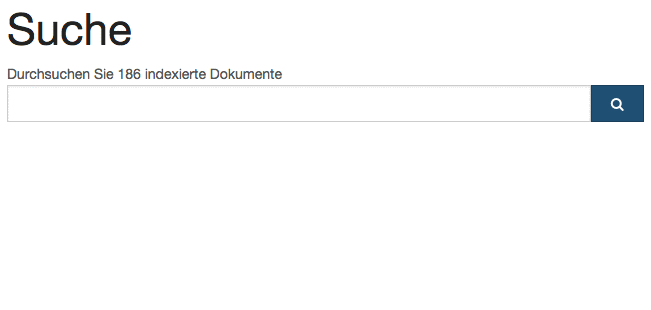
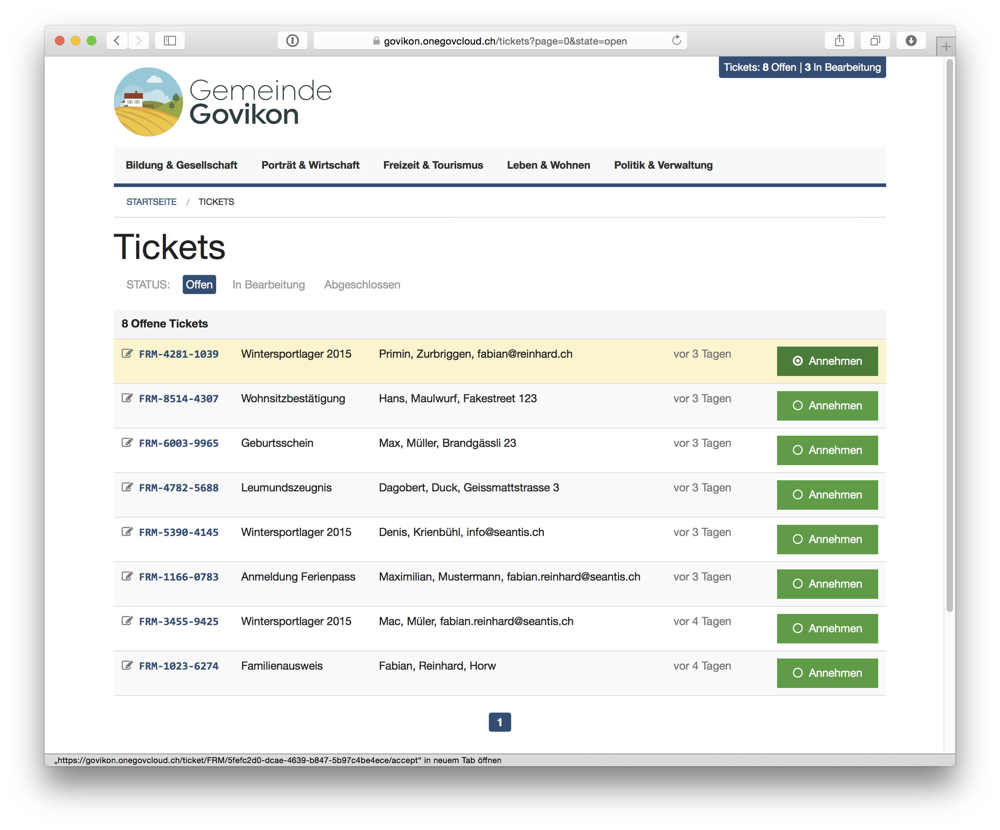

Blog
Intelligente Volltextsuche OneGov Cloud
Dank Suchvervollständigung wird bereits beim Eintippen angezeigt welche Suchbegriffe mindestens ein Resultat versprechen.

Auch die schnelle Navigation per Tastatur ist sichergestellt: Pfeil runter/rauf wählt die Resultate aus, Enter führt die Suche aus und Pfeil rechts macht wie Google eine „Auf gut Glück!“ Anfrage, d.h. das erste Resultat wird direkt geöffnet. Dies ist besonders nützlich, wenn man beispielsweise die Ticketnummer eingibt und direkt auf das entsprechende Ticket springen möchte (und nicht zuerst alle Suchresultate sehen will).
Ausserdem aktiviert jeder beliebige Tastendruck direkt die Suche. So ist es möglich, direkt einen Suchbegriff einzugeben, ohne erst auf den Suchfeld klicken zu müssen.
Alle Infos zu OneGov Cloud: https://www.onegovcloud.ch
Ticketing-System für Dienstleistungen der Gemeindeverwaltung
Der Ablauf ist klar definiert und basiert auf den Prozessen in der Gemeindeverwaltung:
- Zuweisung des Tickets an die zuständige Dienststelle in der Verwaltung
- Bearbeiten des Tickets durch die zuständige Person
- Schliessen des Tickets durch die verantwortliche Person
- (Wiedereröffnen des Tickets durch die Verwaltung)
Ein zentraler Eingang für Formulardaten mit Ticketing-System bietet folgende Vorteile:
- Es geht keine Anfrage (z.B. in einem persönlichen Email-Postfach) verloren
- Überblick über alle offenen Tickets in Echtzeit
- Nachvollziehbarkeit (inkl. Suche in Tickets)
- Automatische Benachrichtigung des Kunden (Ticketeingang, Statusänderung)
- Automatischer Puffer dank Pull-System
Mehr Infos zur OneGov Cloud: https://onegovcloud.ch

EAV als Datenmodell für medizinische Daten
Das OCQMS Datenmodell verwendet den Entity Attribute Value (EAV) Ansatz. Dabei werden Attribute nicht in einer Datenbankspalte sondern in einer Datenbankzeile abgelegt.
- Entity (Datensatz): z.B. Patient
- Attribute (Eigenschaft): z.B. Gewicht
- Value (Eigenschaftswert): z.B. 85kg
Hohe Flexibilität dank Schemafreiheit
Das Datenmodell ist sehr flexibel, d.h. es können neue Attribute hinzugefügt oder entfernt werden ohne das Datenbankschema zu ändern. Das Schema (d.h. die Eingabefelder) für eine spezifische OCQMS Instanz wird als Inhalt in der Datenbank (bzw. Definition in XML) gespeichert. Die Protokolle sind in OCQMS konfigurierbar und nicht nicht «hart» in der Applikation programmiert und damit nicht an ein Datenbankschema gebunden.
Die schemafreie Datenbank ermöglicht die Erweiterung bzw. Anpassung inhaltlicher Konzepte (Items) ohne in die Programmierlogik der Applikation einzugreifen. Inhaltliche Konzepte werden als «Knowledge» in in Modulen definiert. Die Definition erfolgt in der Metasprache XML.
Historisierung und Audit Trail
Zu jedem Eigenschaftswert eines Attributs («Observation») können zusätzliche Metadaten wie z.B. der Autor oder die Erfassungszeit gespeichert werden. Dies ermöglicht die Speicherung eines kompletten Audit-Trails.
OCQMS bietet den kompletten «Audit Trail» aller Aktivitäten (Lesen, Schreiben). Dabei werden folgende Informationen erfasst:
- Wann: Zeitpunkt
- Wer: Autor
- Wo: Kontext (z.B. Patient) und Datenfeld
- Was: Wert
Das Auditing ist beim OCQMS System direkt in die Applikation integriert (d.h. es gibt keine separaten Transaktionslogs oder Audittabellen). Dies ermöglicht einen direkten Zugriff auf die Audit Informationen für alle Benutzer direkt innerhalb der Applikation.
Datenaufbereitung für die Forschung
Im Gegensatz zu einem klassischen relationalen Datenmodell werden beim EAV aggregierte Datenbankabfragen komplizierter und weniger effizient. Für solche Abfragen werden die Daten in OCQM periodisch in eine klassische Tabellenstruktur gespiegelt. Für die Forschung werden die Datensätze aufbereitet und um CSV Format bereitgestellt.
Mehr Infos zu OCQMS: www.healthdata.ai
Agile Denkwerkzeuge: «Integrität einbauen»
Perceived integrity means that the totality of the product achieves a balance of function, usablity, and economy that delights customers. Conceptual inegrity means that the system’s central concepts work together as a smooth, cohesive whole. (Poppendieck 2003)
Integrität (integrity) ist ein breiter Begriff und beinhaltet viele Aspekte wie Unversehrtheit, Intaktheit, Vollständigkeit, Richtigkeit oder Seriosität.
Es lassen sich zwei Dimensionen von Integrität eines Produktes herausarbeiten: konzenzeptionelle Integrität (conceptual integrity) und perzeptierte Integrität (perceived integrity).
Konzeptionelle Integrität
Konzeptionelle Integrität meint, dass die einzelnen Komponenten eines System ganzheitlich aufeinander abgestimmt sind und im Zusammenspiel optimal funktionieren. Das System soll flexibel, wartbar, effizient und anpassungsfähig sein. Das Desgin und die Bedienbarkeit sollen durchgängig konsistent sein und die Software muss den fachlichen Anforderungen (business problems) gerecht werden.
Perzeptierte Integrität
Die pezeptierte Integrität umschreibt die Wahrnehmung des Systems durch den Anwender. Dazu zählt alles was der Nutzer in der Interakeraktion mit dem System erlebt; von der Funktionalität, über die Benutzerfreundlichkeit bis zu den nicht-funktionalen Aspekten.
Interne perzeptierte Integrität
Programmierer sehen sofort und wissen instinktiv, ob eine Software integer ist (free from flaw, defect, and decay). Die interne perzeptierte Integrität lässt sich durch XP Praktiken bewahren (test driven development, refactoring, continous integration, eliminating code smells and antipatterns).
Externe perzeptierte Integrität
Der Benutzer des Systems nimmt bewusst und unterbewusst wahr, ob eine Software integer ist. Ganz zentral für ein gutes Benutzererlebnis sind nicht- funktionale Anforderungen wie Performance (maximum response time) und Benutzerführung (user flow). Für die externe pezeptierte Integrität wichtig ist auch eine gute Informationsarchitektur sowie die sorgfältige und konsistente Verwendung von Begrifflichkeiten und Bezeichnungen.
Konzeptionelle Integrität als Voraussetzung
Konzeptionelle Integrität ist die notwenige aber nicht hinreichende Bedingung für perzeptierte Integrität. Es ist also nicht möglich eine Software zu entwickeln, welche als integer wahrgenommen wird (perceived integrity), ohne dass sie auf der konzeptionellen Ebene (conceptual integrity) die Anforderungen erfüllt.
Integrität lässt sich nicht im Nachhinein in eine Software einbauen. Sie entwickelt sich zu einem Wesensmerkmal des Systems. Das Einbauen von Integrität muss über den gesamten Entstehungs- und Entwicklungsprozess einer Software im Fokus stehen.
Wir entwicklen qualitativ hochstehende Software. Dazu setzen wir auf die besten Open Source Entwickler-Tools und arbeiten gemäss Agiler Methodik.
Literatur
- Poppendieck Mary, Poppendieck Tom (2003): Lean Software Development: An Agile Toolkit
- Andrew Stellman, Jennifer Greene (2014): Learning Agile
Libres - Python Reservation Library
Not a replacement for Outlook or Google Calendar, but a library to manage reservations in the following use cases:
- Manage meeting rooms in a company. Users reserve the rooms themselves without an authority confirming/denying their reservations.
- Manage nursery spots. Parents apply for a spot in the nursery for their kid. Someone at the nursery goes through the applicants and decides who gets the spot. Parents may add an application to the waitinglist.
- Manage community facilities. Citizens see the availability of facilities online and call the municipality to reserve a facility. The management is done internally (maybe through an already existing software). A readonly calendar shows the state on the website.
Libres as such does not provide any user interface for reservations. That is the job of other projects depending on Libres.
Documentation | Source | Bugs